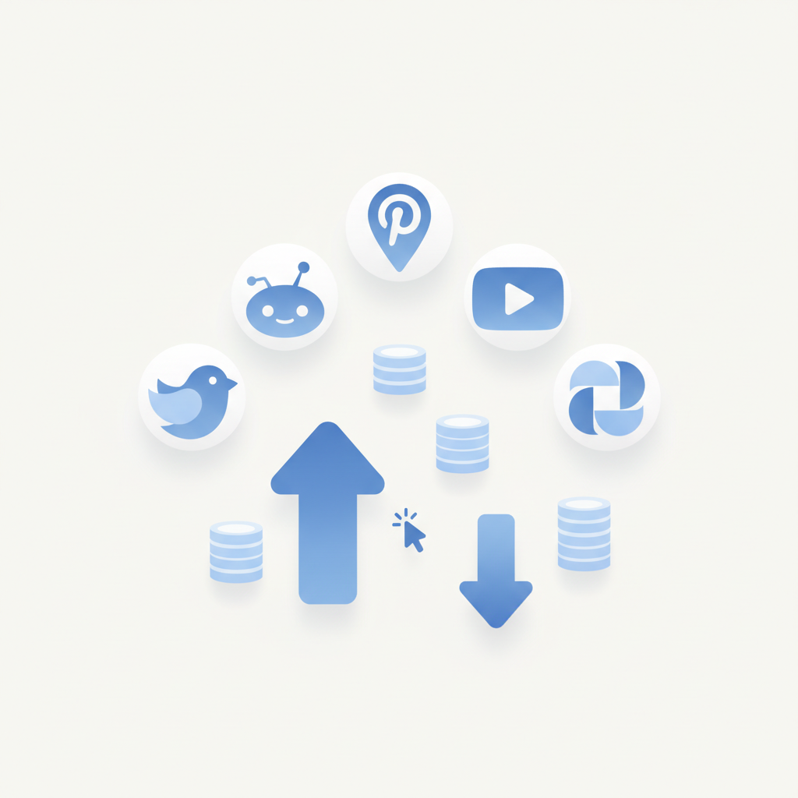
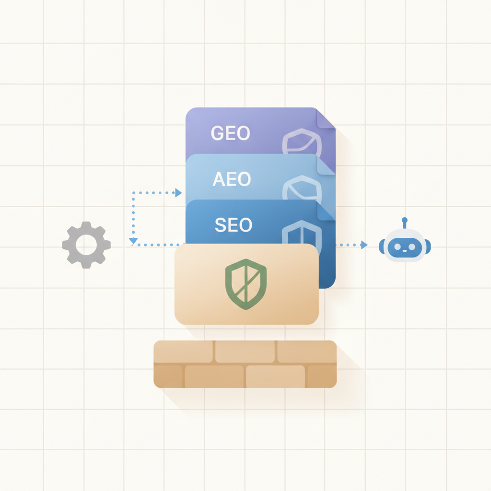
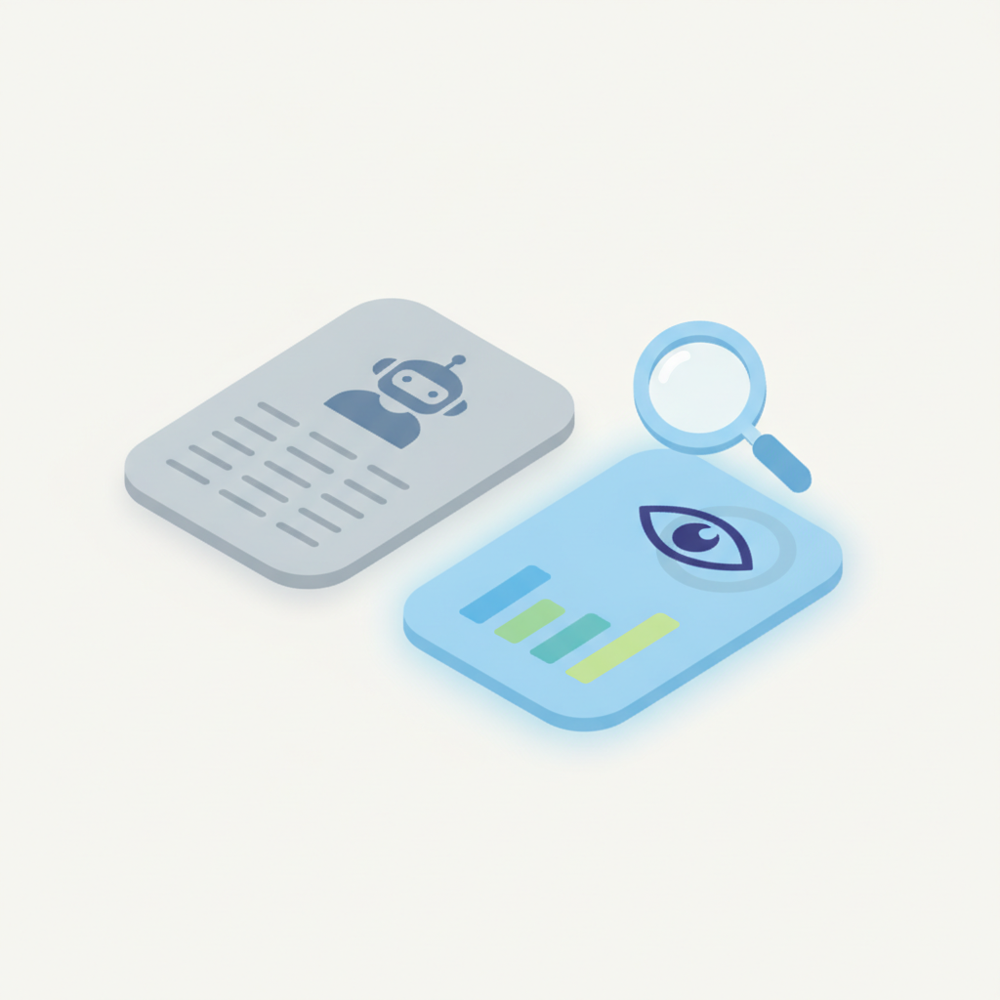
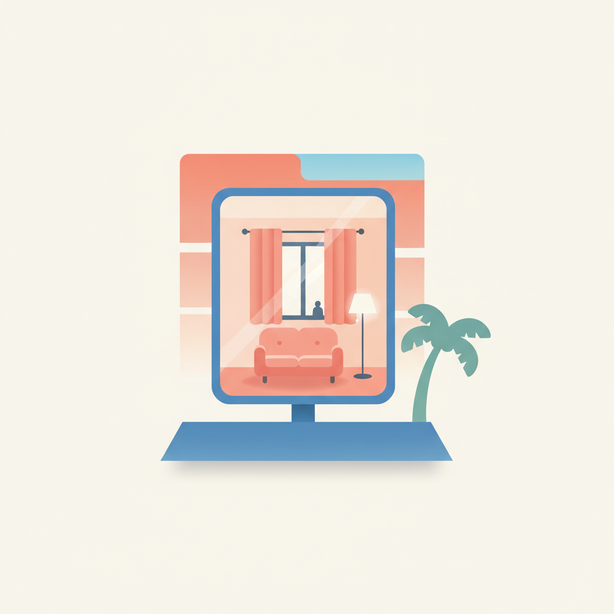
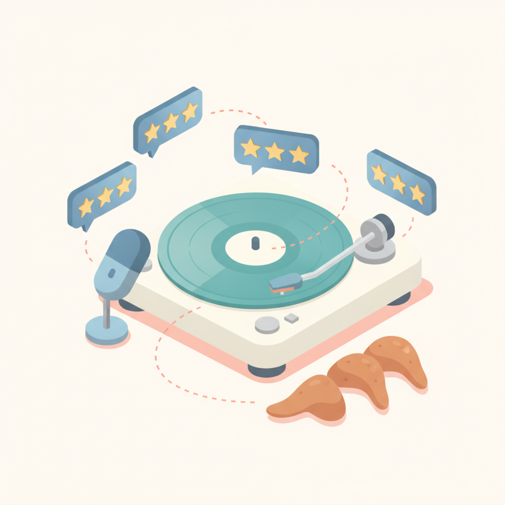
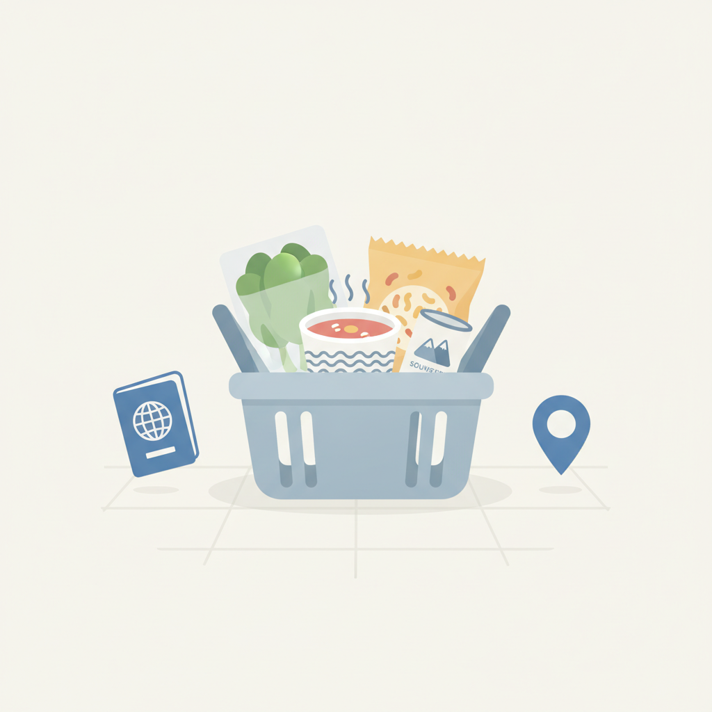
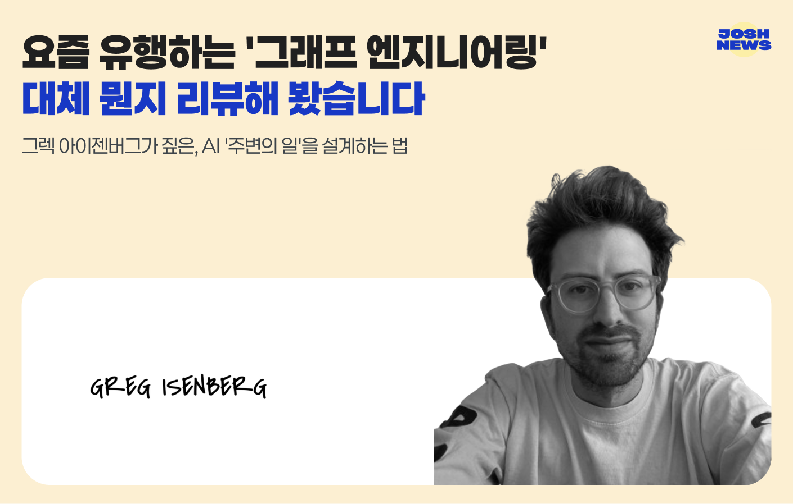
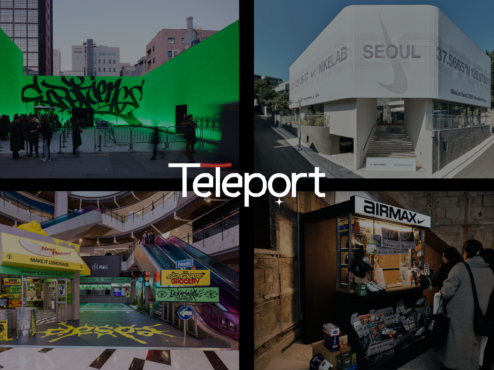

안녕하세요! 수요일 마케팅 소식 전해드립니다 😊 오늘은 롱블랙의 텔레포트 이야기가 단연 인상 깊습니다. 나이키·토스 팝업을 만든 팀이 "멋있어서는 이유가 될 수 없다"고 단언하는 대목이 흥미로운데요, 화려한 비주얼과 긴 줄이 곧 성공이라는 공식에 의문을 던지는 시각입니다. 팝업이 넘쳐나는 지금, 공간 경험을 설계할 때 '왜 이걸 만드는가'라는 질문을 먼저 놓지 않으면 결국 스쳐가는 이벤트로 끝난다는 점을 되짚어보게 합니다. 오늘 꼭 챙겨보시길 권합니다.
마케팅 뉴스에서는 광고 시장의 구조 변화와 AI 최적화 흐름이 함께 다뤄집니다. 상반기 유료 미디어 투자액이 17.5% 늘었지만 CPC는 오히려 10.8% 하락했다는 벤치마크 데이터는, 예산 증가만으로 성과를 보장받기 어려워졌다는 신호입니다. 동시에 클라우드플레어의 AEO 가시성 대시보드 출시처럼, 챗GPT·제미나이 같은 AI 서비스에서 자사 브랜드가 어떻게 인용되는지를 파악하고 최적화하는 것이 브랜드 노출 전략의 새 과제로 자리잡고 있습니다. SEO 기반 없이 GEO만 추구하면 효과가 제한적이라는 분석도 함께 살펴보시길 권합니다.
한 주의 중반, 좋은 인사이트 가득 얻으시길 바랍니다! 🚀

1마케팅 인텔리전스 플랫폼 빌리 그레이스의 '2026년 상반기 벤치마크 보고서'에 따르면 광고주의 유료 미디어 투자액이 전년 동기 대비 17.5% 증가했지만 클릭당 비용은 오히려 10.8% 하락했다. 구글의 광고 예산 비중은 줄어든 반면 틱톡·레딧·빙·핀터레스트·유튜브 등 다양한 플랫폼으로 투자가 분산되는 흐름이 나타났다. 마케터는 예산 확대 시 단일 플랫폼 의존도를 낮추고 채널 다변화 전략을 적극 검토할 필요가 있다.
› 2클라우드플레어가 소비자가 AI 어시스턴트에 질문했을 때 자사 브랜드가 언급·추천되는지, 어떤 콘텐츠가 정보 출처로 활용되는지를 파악할 수 있는 'AEO 가시성 대시보드'를 출시했다. 검색 순위 중심의 SEO를 넘어 AI 응답 내 브랜드 노출 여부가 새로운 가시성 지표로 부상하는 흐름을 반영한 것이다. AI 검색이 확산될수록 브랜드 콘텐츠가 AI에 얼마나 인용되는지 모니터링하는 AEO 전략이 마케터의 필수 과제가 될 전망이다.
›
3ChatGPT·Gemini·Perplexity 등 AI 서비스가 보편화되면서 자사 콘텐츠가 AI에 인용되도록 최적화하는 GEO(Generative Engine Optimization) 개념이 주목받고 있다. SEO·AEO·GEO의 차이와 함께 AI가 콘텐츠를 인용하게 만드는 구체적인 세팅 방법이 제시됐다. GEO는 기존 SEO 기반 없이는 효과를 발휘하기 어렵다는 점에서 마케터는 두 전략을 연계해 접근해야 한다.
›
4생성형 AI가 콘텐츠 제작 도구로 보편화될수록 콘텐츠 차별성은 오히려 약해지고 있다는 분석이 나왔다. 미국 콘텐츠 마케팅 전문기업 오비트 미디어는 AI 시대에 브랜드 경쟁력을 결정하는 콘텐츠의 핵심을 '브랜드만의 관점'과 '독자적인 데이터' 두 가지로 정리했다. 누구나 비슷한 품질의 콘텐츠를 생산할 수 있는 환경에서 마케터는 자사만의 시각과 데이터 기반 콘텐츠 전략에 집중해야 한다.
›
5넷플릭스가 SF 스릴러 '더 라스트 하우스' 홍보를 위해 로스앤젤레스 선셋대로 약 9m 높이 광고판에 창문·소파·가구를 갖춘 실제 거주 공간을 만들고 사람을 사흘간 머물게 하는 '리빙 빌보드'를 선보였다. 영화 속 '집에 갇힌 사람'이라는 콘셉트를 현실의 옥외광고로 구현해 강력한 화제성을 확보했다. 콘텐츠 세계관을 물리적 공간으로 확장하는 이 방식은 디지털 피로도가 높아지는 환경에서 OOH의 새로운 가능성을 보여준다.
›
6글로벌 치킨 윙 브랜드 윙스탑이 크리에이티브 에이전시 오픈런앤코와 함께 실제 고객 리뷰를 래퍼 수퍼비의 가사로 변환해 음원·뮤직비디오·라이브 공연으로 확장한 '라임 더 리뷰' 캠페인을 선보였다. 새로운 광고 카피 대신 소비자가 이미 온라인에 남긴 말을 콘텐츠의 출발점으로 삼았다는 점이 특징이다. UGC(사용자 생성 콘텐츠)를 브랜드 크리에이티브로 전환하는 이 방식은 진정성과 참여감을 동시에 높이는 전략으로 주목할 만하다.
›
7GS25·CU 편의점 양강이 2026년 2분기 호실적을 기록한 가운데, 방한 외국인 관광객 유입과 근거리 장보기 수요 확대가 주목할 성장 지표로 떠올랐다. 편의점은 외국인 관광객의 주요 소비 채널로 자리잡았으며, 오프라인 근거리 채널의 장점을 살려 식료품 구매 수요까지 흡수하고 있다. 마케터는 편의점을 단순 유통 채널이 아닌 외국인 및 일상 쇼핑 접점으로 재정의하고 관련 프로모션 전략을 검토할 필요가 있다.
›
그렉 아이젠버그가 짚은, AI '주변의 일'을 설계하는 법

‘팝업 스토어’하면 어떤 장면이 떠오르세요? 건물 앞에 늘어선 긴 줄, 거대한 조형물, 사진 찍는 사람들, 한정판 굿즈가 연상되죠. 그런데요. 여태 가본 팝업 중, 지금까지 기억에 남는 곳이 있나요?저는 글쎄요.
아티클 읽기 →브랜드 진단부터 지금 당장 해야 할 우선순위까지,
30분 무료 상담에서 함께 정리해드려요.
이미 수십 개 브랜드가 상담받았습니다.
내 브랜드처럼, 함께 고민하는 팀원의 마음으로 봅니다.
스타트업 대표·마케팅 담당자를 위한 30분